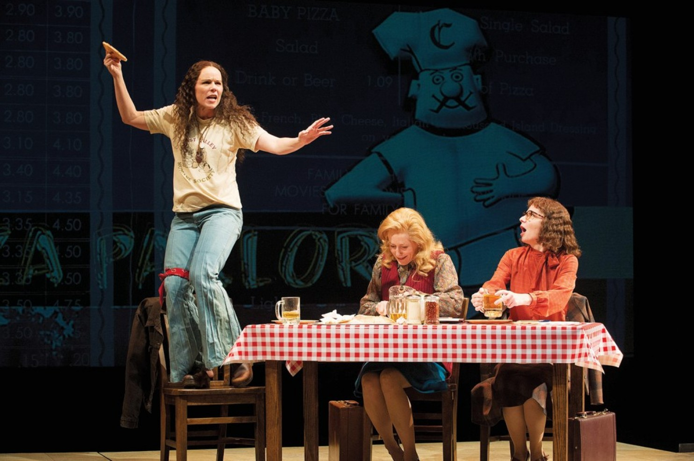

PAGE-TURNER
THE TRAGIC DEATH OF MARK BAUMER
By Anna Heyward
A prolific poet and environmental activist, he was killed while walking across the country barefoot to build awareness of climate change.
NEWS DESK
THE MESSAGING OF TRUMP HOTELS
By Dana Goodyear
The company's new millennial brand, Scion, suggests succession, but without divestment.
POP MUSIC
JOHN CALE'S INVENTIVE RETROSPECTION
By Amanda Petrusich
The experimental musician and co-founder of the Velvet Underground reinterprets his back catalogue.
CULTURE DESK
THE DREAM OF THE SMART HOME
By David Denby
At this year's Consumer Electronics Show, I wondered whether this was a future that would provide happiness.
NEWS DESK
HOW TO LOSE THE WAR ON TERROR
By Robin Wright
The real danger of a Trump ban on Syrian refugees would be a rippling effect, both abroad and in the U.S.
PROFILES
THE TROLL OF INTERNET ART
By Adrian Chen
Brad Troemel's work is a jab at the rigid rules of the art world and an experiment in what art might look like if those rules didn't exist.
Just Published 03:21 P.M.
JIA TOLENTINO
By Jia Tolentino
The surge of sign-ups for an organization aiming to identify competitive congressional districts reflects an energy on the left in search of an outlet.
Just Published 03:00 P.M.
DAILY SHOUTS
By Liana Finck
"Oh, the Places You'll Go After You Retire!," "Horton Hears About the War in Syria," and other timeless titles.
Just Published 02:25 P.M.
CULTURE DESK

By Nora Caplan-Bricker
Lisa Loomer's "Roe," about the two very different women who made the Supreme Court case a reality, captures the dangers of a feminist victory that...
By David Denby
At this year's Consumer Electronics Show, I wondered whether this was a future that would provide happiness.
By Dana Goodyear
The company's new millennial brand, Scion, suggests succession, bug without divestment.